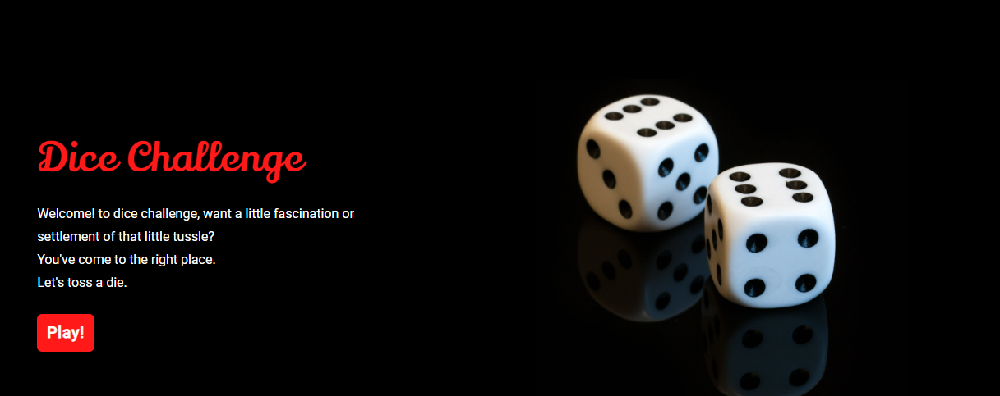
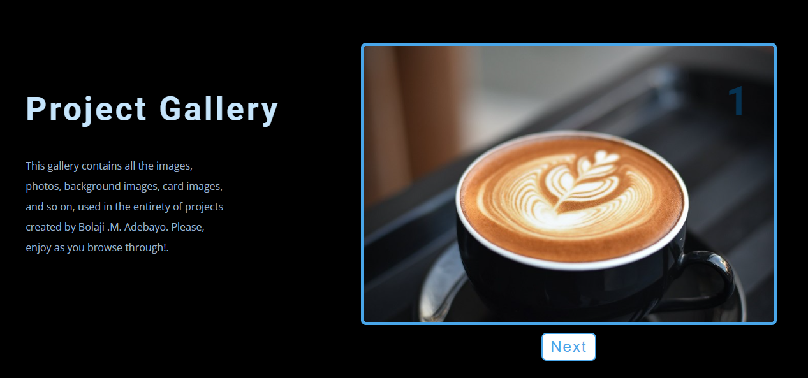

micbol online tutorials
Micbol online tutorials is a website created mainly for educational
purposes. Its main aim is to connect pupils and students to helpful
study materials. Check out the site in the link below.
Micbol Online Tutorials
leap year calculator
Leap year calculator is a tool which can be used to know whether a year is a leap year or not. It can also be used to know the leap years present in a range year. Check out the website
below
leap year calc.

dice challenge
Dice challenge is more like a game than a tool. Its main purpose is for entertainment and settlement of tussles or disagreements by the simple toss of a die. Check out the website
below
dice challenge
color morpher
Color Morpher is a simple website whose main goal is to alternate
between colors. By the click of a button we get a random color,
there's also a provision for colors in hex. It's a great tool to use to get colors for your projects. Check out the website
below
Color Morpher
task manager
Task manager is a tool (to do list). It can be used in listing one's intending activities. The list uses the local storage of the browser, so items can be saved even after refreshing the page. Items can also be edited and deleted. Check out the website
below
task manager

projects gallery
The projects gallery is a website that shows various pictures used in my various projects.
Do you want to see and enjoy the beautiful pictures used throughout my projects ??. Click the link below
projects gallery
projects video
The projects video is a website that gives an overview in a video form all the projects created by me and their source code.
Do you want to see and enjoy these videos ??. Click the link below
projects video
reviews
Reviews website is simply a tool used to document and show reviews on a particular subject (though not yet updated). Check out the website
below
reviews
menu list
Menu list is a site showing the various delicacies offered by a company. These delicacies have been sectioned into "breakfast", "lunch", and "dinner". Check out the website
below
menu list